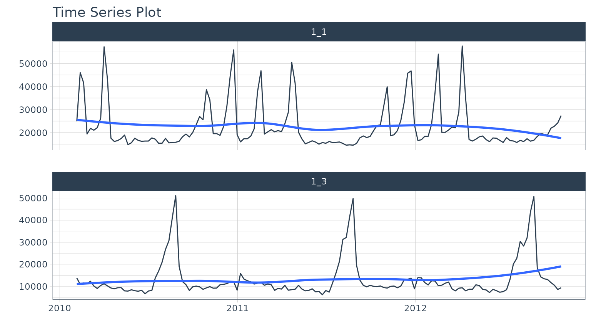
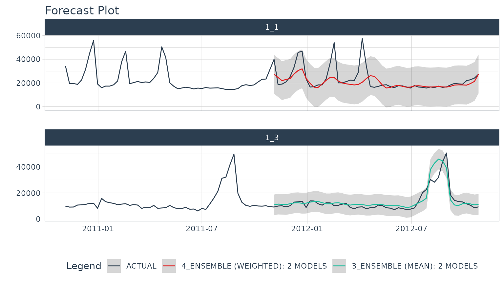
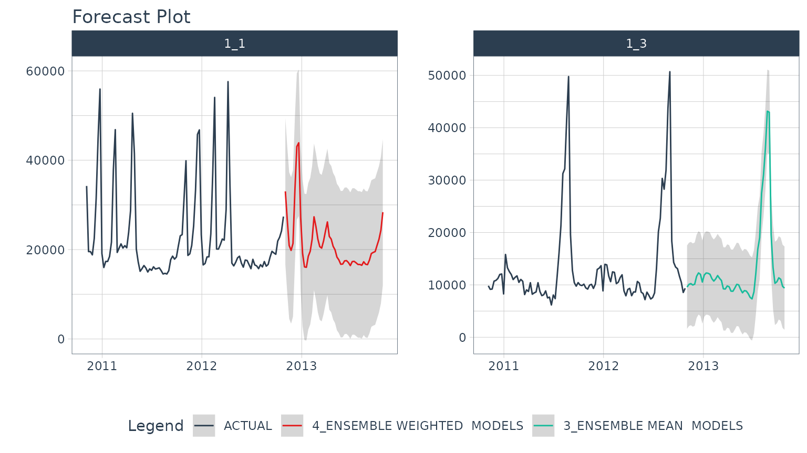

Iterative Forecasting with Nested Ensembles
Source:vignettes/nested-ensembles.Rmd
nested-ensembles.RmdIteratively forecast with nested modeling
Why is nested forecasting important? For starters, the ability to iteratively forecast time series with many models that are trained on many individual groups has been a huge request from students in our Time Series Course. Why? Because two methods exist that get results:
Global Modeling: Best for scalability using a Global Models and a Panel Data structure. See Forecasting with Global Models.
Iterative Forecasting: Best for accuracy using a Nested Data Structure. Takes longer than global model (more resources due to for-loop iteration), but can yield great results.
We’ve incorporated a new approach called “nested forecasting” to help perform Iterative Forecasting.
What is Nested Forecasting?
The core idea of nested forecasting is to convert a dataset containing many time series groups into a nested data set, then fit many models to each of the nested datasets. The result is an iterative forecasting process that generates Nested Modeltime Tables with all of the forecast attributes needed to make decisions.
What is Nested Ensembling?
Nested ensembling applies the concept of ensembling, which is generally averaging many individual models (called submodels) to produce a more stable model that sometimes improves over the best individual model.
We can apply the ensembling techniques to iterative or nested forecasting. In this tutorial, we will show you how to perform:
Average Ensembles using
ensemble_nested_average(). These are the simplest models.Weighted Ensembles using
ensemble_nested_weighted(). These allow the user to provide “loadings” to distribute the weighting to the top models, which can sometimes improve over the simple average ensembles.
Let’s go!
Nested Ensemble Tutorial
We’ll showcase nested ensembling for iterative forecasting in this short tutorial.
Data
Read in the Walmart Sales Weekly data (comes with timetk).
data_tbl <- walmart_sales_weekly %>%
select(id, Date, Weekly_Sales) %>%
set_names(c("id", "date", "value")) %>%
filter(id %in% c("1_1", "1_3"))
data_tbl#> # A tibble: 286 × 3
#> id date value
#> <fct> <date> <dbl>
#> 1 1_1 2010-02-05 24924.
#> 2 1_1 2010-02-12 46039.
#> 3 1_1 2010-02-19 41596.
#> 4 1_1 2010-02-26 19404.
#> 5 1_1 2010-03-05 21828.
#> 6 1_1 2010-03-12 21043.
#> 7 1_1 2010-03-19 22137.
#> 8 1_1 2010-03-26 26229.
#> 9 1_1 2010-04-02 57258.
#> 10 1_1 2010-04-09 42961.
#> # … with 276 more rowsWe can get a quick visual of the two time series we will forecast.
data_tbl %>%
group_by(id) %>%
plot_time_series(date, value, .facet_ncol = 1, .interactive = FALSE)
Prepare the Data in Nested Format
The most critical stage in “Nested Forecasting” is data preparation, making sure that the input to the nested forecasting workflow is in the appropriate structure. We’ve included several functions to help that involve a bit of forethought that can be broken into 3 steps:
Extending each of the times series: How far into the future do you need to predict for each time series? See
extend_timeseries().Nesting by the grouping variable: This is where you create the nested structure. You’ll identify the ID column that separates each time series, and the number of timestamps to include in the “.future_data” and optionally “.actual_data”. Typically, you’ll select the same
.length_futureas your extension from the previous step. Seenest_timeseries().Train/Test Set Splitting: Finally, you’ll take your
.actual_dataand convert into train/test splits that can be used for accuracy and confidence interval estimation. Seesplit_nested_timeseries().
Here are the 3-steps in action:
nested_data_tbl <- data_tbl %>%
# Step 1: Extend
extend_timeseries(
.id_var = id,
.date_var = date,
.length_future = 52
) %>%
# Step 2: Nest
nest_timeseries(
.id_var = id,
.length_future = 52,
.length_actual = 52*2
) %>%
# Step 3: Split Train/Test
split_nested_timeseries(
.length_test = 52
)
nested_data_tbl#> # A tibble: 2 × 4
#> id .actual_data .future_data .splits
#> <fct> <list> <list> <list>
#> 1 1_1 <tibble [104 × 2]> <tibble [52 × 2]> <split [52|52]>
#> 2 1_3 <tibble [104 × 2]> <tibble [52 × 2]> <split [52|52]>Nested Modeltime Workflow
Next, we move into the Nested Modeltime Workflow now that nested data has been created. The Nested Modeltime Workflow includes 3 steps:
-
Modeling Fitting: This is the training stage where we fit to training data. The test forecast is generated from this step.
Create tidymodels workflows.
modeltime_nested_fit(): Used to fit the submodels to the training data.ensemble_nested_average()orensemble_nested_weighted(): Used to make ensembles from the submodels.
Model Evaluation and Selection: This is where we review model performance and select the best model by minimizing or maximizing an error metric. See
modeltime_nested_select_best().Model Refitting: This is the final fitting stage where we fit to actual data. The future forecast is generated from this step. See
modeltime_nested_refit().
Step 1A: Create Tidymodels Workflows
First, we create tidymodels workflows for the various models that you intend to create.
Prophet
A common modeling method is prophet, that can be created using prophet_reg(). We’ll create a workflow. Note that we use the extract_nested_train_split(nested_data_tbl) to help us build preprocessing features.
rec_prophet <- recipe(value ~ date, extract_nested_train_split(nested_data_tbl))
wflw_prophet <- workflow() %>%
add_model(
prophet_reg("regression", seasonality_yearly = TRUE) %>%
set_engine("prophet")
) %>%
add_recipe(rec_prophet)XGBoost
Next, we can use a machine learning method that can get good results: XGBoost. We will add a few extra features in the recipe feature engineering step to generate features that tend to get better modeling results. Note that we use the extract_nested_train_split(nested_data_tbl) to help us build preprocessing features.
rec_xgb <- recipe(value ~ ., extract_nested_train_split(nested_data_tbl)) %>%
step_timeseries_signature(date) %>%
step_rm(date) %>%
step_zv(all_predictors()) %>%
step_dummy(all_nominal_predictors(), one_hot = TRUE)
wflw_xgb <- workflow() %>%
add_model(boost_tree("regression") %>% set_engine("xgboost")) %>%
add_recipe(rec_xgb)Step 1B: Nested Modeltime Tables
With a couple of modeling workflows in hand, we are now ready to test them on each of the time series. We start by using the modeltime_nested_fit() function, which iteratively fits each model to each of the nested time series train/test “.splits” column.
nested_modeltime_tbl <- modeltime_nested_fit(
# Nested data
nested_data = nested_data_tbl,
# Add workflows
wflw_prophet,
wflw_xgb
)#> Fitting models on training data... ■■■■■■■■■■■■■■■■ 50% | ETA:…#> Fitting models on training data... ■■■■■■■■■■■■■■■■■■■■■■■■■■■■■■■ 100% | ETA:…
nested_modeltime_tbl#> # Nested Modeltime Table
#> #> Trained on: .splits | Model Errors: [0]#> # A tibble: 2 × 5
#> id .actual_data .future_data .splits .modeltime_tables
#> <fct> <list> <list> <list> <list>
#> 1 1_1 <tibble [104 × 2]> <tibble [52 × 2]> <split [52|52]> <mdl_time_tbl>
#> 2 1_3 <tibble [104 × 2]> <tibble [52 × 2]> <split [52|52]> <mdl_time_tbl>This adds a new column with .modeltime_tables for each of the data sets and has created several logged attributes that are part of the “Nested Modeltime Table”. We also can see that the models were trained on “.splits” and none of the models had any errors.
Accuracy Check
This is kind of advanced, but because our accuracy functions (table_modeltime_accuracy(.interactive = FALSE)) produce static gt table, we can make a function to highlight rows by group.
tab_style_by_group <- function(object, ..., style) {
subset_log <- object[["_boxhead"]][["type"]]=="row_group"
grp_col <- object[["_boxhead"]][["var"]][subset_log] %>% rlang::sym()
object %>%
tab_style(
style = style,
locations = cells_body(
rows = .[["_data"]] %>%
rowid_to_column("rowid") %>%
group_by(!! grp_col) %>%
filter(...) %>%
ungroup() %>%
pull(rowid)
)
)
}And now we can see which models are the winners, performing the best by group with the lowest RMSE (root mean squared error).
nested_modeltime_tbl %>%
extract_nested_test_accuracy() %>%
group_by(id) %>%
table_modeltime_accuracy(.interactive = FALSE) %>%
tab_style_by_group(
rmse == min(rmse),
style = cell_fill(color = "lightblue")
)| Accuracy Table | ||||||||
|---|---|---|---|---|---|---|---|---|
| .model_id | .model_desc | .type | mae | mape | mase | smape | rmse | rsq |
| 1_1 | ||||||||
| 1 | PROPHET | Test | 10071.47 | 45.88 | 1.99 | 59.97 | 11776.87 | 0.38 |
| 2 | XGBOOST | Test | 6223.73 | 25.25 | 1.23 | 24.50 | 9026.26 | 0.19 |
| 1_3 | ||||||||
| 1 | PROPHET | Test | 3539.80 | 29.87 | 1.37 | 25.46 | 4707.77 | 0.80 |
| 2 | XGBOOST | Test | 3071.25 | 18.74 | 1.19 | 20.26 | 5069.27 | 0.79 |
Step 1C: Make Ensembles
Now that we’ve fitted submodels, our goal is to improve on the submodels by leveraging ensembles.
Average Ensemble
We’ll give a go at an average ensemble using a simple mean with the ensemble_nested_average() function. We select type = "mean" for simple average (another option is median ensemble, which is better when you have models with large spikes).
nested_ensemble_1_tbl <- nested_modeltime_tbl %>%
ensemble_nested_average(
type = "mean",
keep_submodels = TRUE
)
nested_ensemble_1_tbl#> # Nested Modeltime Table
#> # A tibble: 2 × 5
#> id .actual_data .future_data .splits .modeltime_tables
#> <fct> <list> <list> <list> <list>
#> 1 1_1 <tibble [104 × 2]> <tibble [52 × 2]> <split [52|52]> <mdl_time_tbl>
#> 2 1_3 <tibble [104 × 2]> <tibble [52 × 2]> <split [52|52]> <mdl_time_tbl>We can check the accuracy again. This time the Ensemble (MEAN) outperforms both the prophet and xgboost submodels.
nested_ensemble_1_tbl %>%
extract_nested_test_accuracy() %>%
group_by(id) %>%
table_modeltime_accuracy(.interactive = FALSE) %>%
tab_style_by_group(
rmse == min(rmse),
style = cell_fill(color = "lightblue")
)| Accuracy Table | ||||||||
|---|---|---|---|---|---|---|---|---|
| .model_id | .model_desc | .type | mae | mape | mase | smape | rmse | rsq |
| 1_1 | ||||||||
| 1 | PROPHET | Test | 10071.47 | 45.88 | 1.99 | 59.97 | 11776.87 | 0.38 |
| 2 | XGBOOST | Test | 6223.73 | 25.25 | 1.23 | 24.50 | 9026.26 | 0.19 |
| 3 | ENSEMBLE (MEAN): 2 MODELS | Test | 5411.95 | 20.18 | 1.07 | 22.20 | 8654.09 | 0.41 |
| 1_3 | ||||||||
| 1 | PROPHET | Test | 3539.80 | 29.87 | 1.37 | 25.46 | 4707.77 | 0.80 |
| 2 | XGBOOST | Test | 3071.25 | 18.74 | 1.19 | 20.26 | 5069.27 | 0.79 |
| 3 | ENSEMBLE (MEAN): 2 MODELS | Test | 2659.68 | 18.99 | 1.03 | 17.74 | 4037.20 | 0.82 |
Weighted Ensemble
Next, we can give a go at a weighted ensemble with the ensemble_nested_weighted() function. A few key points about the arguments:
loadings: This parameter allows us to weight models differently. Providingc(2,1)places a 2-to-1 weighting on the two submodels.metric: This parameter is determined by the accuracy table. The default is to use the “rmse” column. The loadings are then applied to the best (lowest) “rmse” first. The best model will have 2/3 (66% weight) loading and the second best will have 1/3 (33% weight).model_ids: This is a filtering mechanism to help us isolate which model ID’s that we want to include as submodels. We want to exclude Model ID 3, because this is our Ensemble Average (MEAN) model.control: This usescontrol_nested_fit()to control aspects of the fitting process like running in Parallel vs Sequential and outputting verbose to provide additional information during the fitting process.
nested_ensemble_2_tbl <- nested_ensemble_1_tbl %>%
ensemble_nested_weighted(
loadings = c(2,1),
metric = "rmse",
model_ids = c(1,2),
control = control_nested_fit(allow_par = FALSE, verbose = TRUE)
) #> ℹ [1/2] Starting Modeltime Table: ID 1_1...#> ✔ Model 4 Passed ENSEMBLE WEIGHTED.#> ✔ [1/2] Finished Modeltime Table: ID 1_1#> ℹ [2/2] Starting Modeltime Table: ID 1_3...#> ✔ Model 4 Passed ENSEMBLE WEIGHTED.#> ✔ [2/2] Finished Modeltime Table: ID 1_3#> Finished in: 2.332381 secs.
nested_ensemble_2_tbl#> # Nested Modeltime Table
#> #> Trained on: .splits | Model Errors: [0]#> # A tibble: 2 × 5
#> id .actual_data .future_data .splits .modeltime_tables
#> <fct> <list> <list> <list> <list>
#> 1 1_1 <tibble [104 × 2]> <tibble [52 × 2]> <split [52|52]> <mdl_time_tbl>
#> 2 1_3 <tibble [104 × 2]> <tibble [52 × 2]> <split [52|52]> <mdl_time_tbl>Next, let’s check the accuracy on the new ensemble. The Weighted Ensemble has improved the 1_1 time series, but not the 1_3 time series.
nested_ensemble_2_tbl %>%
extract_nested_test_accuracy() %>%
group_by(id) %>%
table_modeltime_accuracy(.interactive = FALSE) %>%
tab_style_by_group(
rmse == min(rmse),
style = cell_fill(color = "lightblue")
)| Accuracy Table | ||||||||
|---|---|---|---|---|---|---|---|---|
| .model_id | .model_desc | .type | mae | mape | mase | smape | rmse | rsq |
| 1_1 | ||||||||
| 1 | PROPHET | Test | 10071.47 | 45.88 | 1.99 | 59.97 | 11776.87 | 0.38 |
| 2 | XGBOOST | Test | 6223.73 | 25.25 | 1.23 | 24.50 | 9026.26 | 0.19 |
| 3 | ENSEMBLE (MEAN): 2 MODELS | Test | 5411.95 | 20.18 | 1.07 | 22.20 | 8654.09 | 0.41 |
| 4 | ENSEMBLE (WEIGHTED): 2 MODELS | Test | 4398.23 | 14.67 | 0.87 | 15.90 | 8322.65 | 0.41 |
| 1_3 | ||||||||
| 1 | PROPHET | Test | 3539.80 | 29.87 | 1.37 | 25.46 | 4707.77 | 0.80 |
| 2 | XGBOOST | Test | 3071.25 | 18.74 | 1.19 | 20.26 | 5069.27 | 0.79 |
| 3 | ENSEMBLE (MEAN): 2 MODELS | Test | 2659.68 | 18.99 | 1.03 | 17.74 | 4037.20 | 0.82 |
| 4 | ENSEMBLE (WEIGHTED): 2 MODELS | Test | 2776.66 | 21.31 | 1.08 | 19.17 | 4069.13 | 0.82 |
Step 2: Select Best
Using the accuracy data, we can pick a metric and select the best model based on that metric. The available metrics are in the default_forecast_accuracy_metric_set(). Make sure to select minimize based on the metric. The filter_test_forecasts parameter tells the function to filter the logged test forecasts to just the best.
best_nested_modeltime_tbl <- nested_ensemble_2_tbl %>%
modeltime_nested_select_best(
metric = "rmse",
minimize = TRUE,
filter_test_forecasts = TRUE
)Extract Nested Best Model Report
The best model selections can be accessed with extract_nested_best_model_report().
best_nested_modeltime_tbl %>%
extract_nested_best_model_report() %>%
table_modeltime_accuracy(.interactive = FALSE)| Accuracy Table | |||||||||
|---|---|---|---|---|---|---|---|---|---|
| id | .model_id | .model_desc | .type | mae | mape | mase | smape | rmse | rsq |
| 1_1 | 4 | ENSEMBLE (WEIGHTED): 2 MODELS | Test | 4398.23 | 14.67 | 0.87 | 15.90 | 8322.65 | 0.41 |
| 1_3 | 3 | ENSEMBLE (MEAN): 2 MODELS | Test | 2659.68 | 18.99 | 1.03 | 17.74 | 4037.20 | 0.82 |
Extract Nested Best Test Forecasts
Once we’ve selected the best models, we can easily visualize the best forecasts by time series. Note that the nested test forecast logs have been modified to isolate the best models.
best_nested_modeltime_tbl %>%
extract_nested_test_forecast() %>%
group_by(id) %>%
plot_modeltime_forecast(
.facet_ncol = 1,
.interactive = FALSE
)
Step 3: Refitting and Future Forecast
With the best models in hand, we can make our future forecasts by refitting the models to the full dataset.
If the best models have been selected, the only the best models will be refit.
If best models have not been selected, then all models will be refit.
We’ve selected our best models, and will move forward with refitting and future forecast logging using the modeltime_nested_refit() function.
nested_modeltime_refit_tbl <- best_nested_modeltime_tbl %>%
modeltime_nested_refit(
control = control_nested_refit(verbose = TRUE)
)#> ℹ [1/2] Starting Modeltime Table: ID 1_1...#> ✔ Model 4 Passed ENSEMBLE (WEIGHTED): 2 MODELS.#> ✔ [1/2] Finished Modeltime Table: ID 1_1#> ℹ [2/2] Starting Modeltime Table: ID 1_3...#> ✔ Model 3 Passed ENSEMBLE (MEAN): 2 MODELS.#> ✔ [2/2] Finished Modeltime Table: ID 1_3#> Finished in: 2.347379 secs.We can see that the nested modeltime table appears the same, but has now been trained on .actual_data.
nested_modeltime_refit_tbl#> # Nested Modeltime Table
#> #> Trained on: .actual_data | Model Errors: [0]#> # A tibble: 2 × 5
#> id .actual_data .future_data .splits .modeltime_tables
#> <fct> <list> <list> <list> <list>
#> 1 1_1 <tibble [104 × 2]> <tibble [52 × 2]> <split [52|52]> <mdl_time_tbl>
#> 2 1_3 <tibble [104 × 2]> <tibble [52 × 2]> <split [52|52]> <mdl_time_tbl>Extract Nested Future Forecast
After the refitting process completes, we can now access the future forecast, which is logged.
nested_modeltime_refit_tbl %>%
extract_nested_future_forecast() %>%
group_by(id) %>%
plot_modeltime_forecast(
.interactive = FALSE,
.facet_ncol = 2
)
Summary
Nested ensembling is a powerful technique that can improve forecasting accuracy. But, this is just a small portion of what can be done to take your forecasting to the next level… If you want to become a forecasting expert for your organization, then take the read on!
Take the High-Performance Forecasting Course
Become the forecasting expert for your organization
High-Performance Time Series Course
Time Series is Changing
Time series is changing. Businesses now need 10,000+ time series forecasts every day. This is what I call a High-Performance Time Series Forecasting System (HPTSF) - Accurate, Robust, and Scalable Forecasting.
High-Performance Forecasting Systems will save companies by improving accuracy and scalability. Imagine what will happen to your career if you can provide your organization a “High-Performance Time Series Forecasting System” (HPTSF System).
How to Learn High-Performance Time Series Forecasting
I teach how to build a HPTFS System in my High-Performance Time Series Forecasting Course. You will learn:
-
Time Series Machine Learning (cutting-edge) with
Modeltime- 30+ Models (Prophet, ARIMA, XGBoost, Random Forest, & many more) -
Deep Learning with
GluonTS(Competition Winners) - Time Series Preprocessing, Noise Reduction, & Anomaly Detection
- Feature engineering using lagged variables & external regressors
- Hyperparameter Tuning
- Time series cross-validation
- Ensembling Multiple Machine Learning & Univariate Modeling Techniques (Competition Winner)
- Scalable Forecasting - Forecast 1000+ time series in parallel
- and more.
Become the Time Series Expert for your organization.